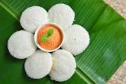

<h1>Idly</h1>

<ul>
    <li>Rice</li>
    <li>Salt</li>
    <li>Dal</li>
</ul>
<ol>
    <li>Mix Idly batter</li>
    <li>Pour Idly batter onto idly plate</li>
    <li>Circular motion to make idly in each hole</li>
    <li>Put oil on the idlies</li>
    <li>Wait until steam cooked</li>
    <li>Serve</li>
</ol>